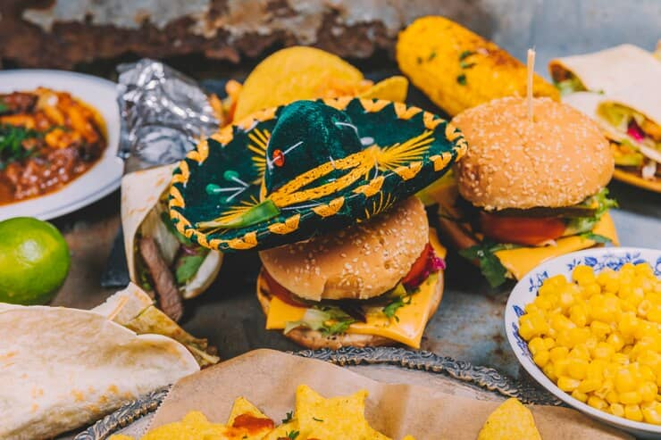

C'est qui SIERRA et pour quoi SIERRA FASTFOOD
Sierra est une marque qui s’est rapidement imposée dans le secteur de la restauration rapide. Fondée par un groupe d’entrepreneurs passionnés de gastronomie, Sierra se distingue par son engagement à offrir des produits de qualité, tout en respectant des valeurs éthiques.
Qualité des ingrédients
Sierra s’approvisionne auprès de producteurs locaux pour garantir la fraîcheur et la qualité de ses produits.
Variété du menu
Le menu propose une large gamme d’options, y compris des plats végétariens et des alternatives saines, pour répondre à tous les goûts.
Engagement éthique
Sierra se préoccupe de l’impact environnemental de ses activités et s’efforce de réduire son empreinte carbone.
Ambiance conviviale
Les restaurants Sierra sont conçus pour offrir une atmosphère accueillante où les clients peuvent se détendre tout en dégustant leurs plats préférés.

Entrprise international
Sierra Fastfood se positionne comme une alternative responsable dans le monde de la restauration rapide, alliant goût, qualité et éthique.
Reconnu
En choisissant Sierra, les clients soutiennent non seulement une entreprise locale, mais ils font également le choix d’une alimentation plus saine et respectueuse de l’environnement.